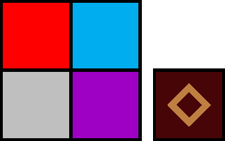
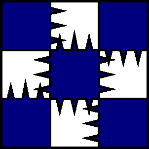
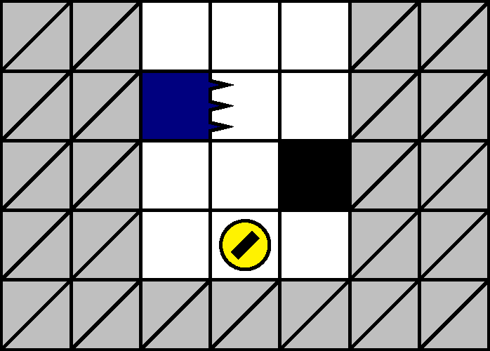
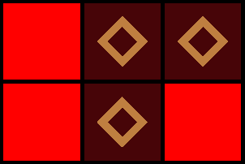
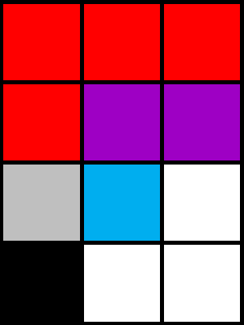
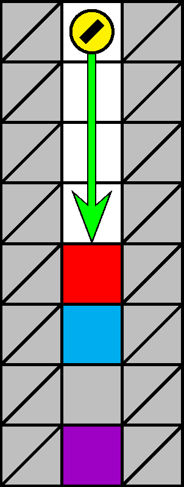

基礎知識
ゲームの仕組み
ゲームの仕組みに関するすべての情報が網羅されているわけではないことに注意してください．本節以外が初出となる情報も存在します．また，ゲーム端末上での具体的な操作手順については言及されていません．
オブジェクトの種類


ステージ上に出現するオブジェクトは，ブロック・アイテム・レーザーの 3 種類に分類されます:
- ブロック: 石・塊・壁・針・床の 5 種類です．
- 石: その色によって，赤石・白石・青石・紫石の 4 種類に分かれます（図 1.2.1）．透明なブロック（後述）は，便宜的に透明石として扱います．
- 針: その生える方向によって，上針・下針・左針・右針・四針の 5 種類に分かれます（図 1.2.2）．
- アイテム: ザクロ・銀貨・金貨の 3 種類です（図 1.2.3）．
- レーザー: その向きによって，縦レーザー・横レーザーの 2 種類に分かれます．
ブロックが有色であるとは，透明石でないことをいいます．例えば，有色石は赤石・青石・白石・紫石の総称です．消滅可能オブジェクトは，有色石・塊・床・アイテムで全部です．
ステージと画面
各階層は， 7 列 100 行に配置されたオブジェクト 700 個からなります．犬が 100 行目に位置した状態で床を吸引すると次の階層へ遷移します．
犬の静止状態において，画面にはステージのうち犬の上下 4 行まで（計 9 行）の全列がほぼ完全に映ります．犬の上下それぞれの 5 行目はわずかにしか映りませんが，少なくともオブジェクトの分類の特定は可能です（画面の装飾のため，画面四隅に位置するオブジェクトは特に視認困難です）．
犬が 300 m, 600 m, 1300m型階層にはじめて進入すると，ゲームの進行速度が上がります．初期の速度を 0 速，以降加速するごとに 1 速， 2 速， 3 速とよびます． ゲームの進行速度が上がることで一部のパラメーターが変化します．例えば，ブロックの消滅猶予（後述）は，各速で約 10/60, 9/60, 7/60, 5/60 秒と変化します．
犬（ソウルハウンド）

犬は，その操作に関して様々な猶予をもちます． 犬は，吸引した後に再び吸引できるようになるまでに，ゲームの進行速度に依存する時間がかかります．この時間を吸引猶予とよびます．吸引猶予より短く吸引操作を行っても，すべての操作が有効になるとは限りません．
犬は，行と列ともに実数（非整数）値の座標を取り得ます．犬の座標を整数値で与える必要がある際は，四捨五入によって計算されていると考えられます．そこで，犬の座標の整数値は本マニュアルにおいても四捨五入で計算します．
犬は，老衰または事故死（以下で説明）により死亡します．犬は初期状態で残機を 3 機もちます．犬が 2 以上の残機をもっている場合，死後，犬は残機を 1 機消費して蘇生し，寿命が 100 カウントに回復します．また，死亡時の犬の深度以上の行かつ犬の左右 1 列までに位置するすべての有色石および塊が消滅します（図 1.2.4）．
犬は寿命を初期状態および最大で 100 カウント有します．寿命は，ステージ入場中に，ゲームの進行速度に依存する速さで一定に消費され，寿命が 0 になる*1と犬は死亡します．この死因を老衰とよびます．
犬が死亡判定に当たることを事故とよびます．無敵状態（後述）でない犬は事故によりダメージを受けます．無敵状態でなくバリア（後述）をもたない犬は事故で死亡します．この死因を事故死とよびます．死亡判定は次の 3 種類に分類されます:
- 圧迫: 落下してきたブロックに現在位置を通過される．
- 刺突: 針に刺される．
- 照射: レーザーに当たる．
蘇生中はすべての死亡判定が無効です．蘇生後，死亡判定 \(d\) が再び有効になるまでの時間を， \(d\) の死亡猶予とよびます．各判定の死亡猶予はゲームの進行速度によらないと思われます．刺突と照射は非零の死亡猶予をもちます．圧迫の死亡猶予は事実上 0 だと考えられます: 蘇生直後であっても再び圧迫され得ます．
犬の残機がなくなる（残機が 1 機の状態で死亡する）とゲームオーバーです．犬の残機はポイントに応じて自動的に取得され，最大で計 10 機まで保有できます．詳細は「ポイントは重要？」を参照してください．
石と塊の連結

同色のブロックは，辺を完全に共有して隣接すると繋がります．このことを，ブロックが連結するといいます．同色のブロックの空でない集合 \(B\) が連結であるとは， \(B\) に属する任意のブロック \(b, b'\) に対して， \(B\) に属する有限個のブロック \(b_1, \dots, b_n\) が存在して， \(b_1=b\) および \(b_n = b'\) を満たし，かつ各 \(b_{k-1} \ (k=2, \dots, n)\)が \(b_k\) と隣接していることをいいます．ブロック \(b\) による一点集合 \(B = \{b\}\) は，一項の列 \(b_1=b\) により連結であることに注意します． \(B\) が非連結であるとは，連結でないことをいいます． \(B\) が連結成分であるとは，\(B\) が極大な連結集合であること（連結集合であって，それより真に大きな連結集合をもたないこと）をいいます．ブロック \(b\) を含む連結成分を，単に \(b\) の連結成分とよびます．（連結成分は多くの場合でブロックの性質を共有するため，用語を濫用して，ブロックのなす連結成分を単にブロックなどとよぶことがあります．）
例えば，図 1.2.5 において，塊全体のなす集合は連結で，赤石全体のなす集合は非連結です．連結成分は 3 つあります．塊のなす連結成分は 3 つのブロックからなります．
一度連結したブロックは，自然には離れなくなります．
オブジェクトの落下

注記: 落下猶予中のブロックに着地したオブジェクトは，当該ブロックが落下し始めることはじめて落下猶予に入ります．このため，以下の定義は不正確です．定義は後の版で修正されます．
壁・針・床・レーザーは落下しません．石・塊・アイテムは落下します．透明石を除く落下可能オブジェクトは消滅可能です．オブジェクト \(b\) が落下予定であることは，「\(b\) が落下可能であり， \(b\) の連結成分の直下で接触しているすべてのオブジェクトが落下予定である」という条件により，再帰的に定義されます．特に，落下可能オブジェクト \(b\) は， \(b\) の連結成分の直下で接触しているオブジェクトが存在しないとき，落下予定です．図 1.2.6 で，青石と紫石は落下予定であり，赤石と白石は落下予定ではありません．オブジェクトの集合 \(B\) が落下予定であるとは， \(B\) に属するすべてのオブジェクトが落下予定であることをいいます．定義により，オブジェクト \(b\) に対し， \(b\) が落下予定であることと \(b\) の連結成分が落下予定であることとは同値です．
落下可能オブジェクトの集合 \(B\) の落下トリガー \(T\) とは，消滅可能オブジェクトの集合であって，消滅により \(B\) が落下予定になるようなもののうち最小の集合を指します．図 1.2.6 で，赤石のなす連結成分の落下トリガーは白石だけからなる 1 点集合です．また，落下予定オブジェクトの落下トリガーは空集合です． \(B\) の落下トリガーが連鎖（後述）以外の原因で消滅したとき， \(B\) はその後一定時間が経過してから落下します．この一定時間を落下猶予とよびます．落下猶予の間，オブジェクトは振動します．（落下猶予はゲームの進行速度によらないと思われます．）連鎖によって \(B\) の落下トリガーが消滅したとき， \(B\) は落下猶予なしに落下します．
オブジェクトが落下停止するとは，落下の後に着地するなどして停止することをいいます．初期状態の静止しているオブジェクトのことを落下停止しているとはいいません．
同じ連結成分に属するブロックは，同時に落下し，落下猶予を共有します．特に，静止している連結成分にブロック \(b\) が落下しながら連結した場合， \(b\) は落下停止します．また，落下猶予をもつ連結成分に新しいブロックが連結すると，新たな連結成分も落下猶予をもち，そのカウントはリセットされます．落下猶予をもたない連結成分同士は（一方が落下停止するまで）互いに連結しえないことに注意します．
落下猶予中のブロックに登ることはできません．
ブロックの破壊

ブロックのうち，透明石・壁・針は消滅せず，有色石・塊・床は消滅可能です．有色石・塊・床を破壊するとは，次の 3 つの方法のいずれかによって消滅させることをいいます:
- 既定の回数だけ吸引する: 石と床は 1 回，塊は 5 回の吸引で消滅させられます．
- 消滅範囲に入るよう 3 マス以上急降下する（有色石と塊に対してのみ有効）．
- 連鎖させる: ブロックを落下させ，連結成分を 4 ブロック以上にする．
ただし，床は吸引によってのみ破壊できます．
急降下とは，犬が降下中に下吸引することで自由落下よりも早く降下することをいいます． 3 マス以上のスペースを急降下すると，着地地点の同列の下方 3 マスのブロックが破壊されます．図 1.2.7 の位置にいる犬が急降下すると，赤石・青石・白石は破壊されますが，紫石は破壊されません．なお，アイテムの取得を含めて 3 マス以上のスペースを急降下した場合は，破壊範囲が下方 2 マスまでに限定されることがあります: 赤石の直上にザクロが配置されていた場合，急降下によって赤石と青石のみが破壊されることがあります．また，床は 3 マス以上の急降下によっては破壊できません．
連鎖は，厳密には次の 2 条件が満たされることで発生します:
例えば， 4 ブロック以上の連結成分は，落下後に着地（落下停止）すると消滅します．一方，初期配置で 4 ブロック以上からなる連結成分は，自然には消滅しません．
石 \(s\) を破壊すると，石は \(s\) の連結成分ごと消滅します．一方，塊 \(c\) を破壊しても， \(c\) の連結成分に属する \(c\) 以外の塊は消滅しません．図 1.2.5 において，上段中央の塊を破壊しても，残り 2 つの塊は残存し，それぞれが新たな連結成分をなします．
ただし，破壊によらないブロック \(b\) の消滅は， \(b\) の連結成分の状況とは無関係に起こります．例えば，ブロック \(b\) が犬の死亡時に消滅するのは，\(b\) が消滅可能であって消滅範囲に入っているとき，かつそのときに限ります．
ブロックが消滅の要因を受けてから実際に消滅し終えるまでに，ゲームの進行速度および状況に依存する時間がかかります．この時間を消滅猶予とよびます．消滅猶予にあるブロックが占める領域へ，犬は進入できません．このため，犬は直下のブロックの吸引を繰り返しながら降下と同一の速度で潜行することはできません．
針の挙動
針ブロックは，針が向いている方向の隣接スペースに犬が進入すると，針を出します．刺突判定は，フラグ（犬の進入）を確認してから，ゲームの進行速度によらず種類に依存する一定時間（上下左右針は約 52/60 秒，四針は約 61/60 秒）が経過した後にアクティブになります．この一定時間を針猶予とよびます．針は一定時間が経過すると格納され，次のフラグまで待機します．フラグの確認から針が収まるまでの間，ブロックが輝きます．初期状態を含め待機中にフラグがネガティブからポジティブに変化したときは，音が鳴ります．
針の出現とレーザーの出現は両立しません: 針ステージにレーザーは出現せず，レーザーステージに針は出現しません．
レーザーの挙動
レーザーは，ゲームの進行速度によらず階層型に依存する一定間隔（400 m, 900 m, 1100 m型でそれぞれ約 270/60, 210/60, 330/60 秒）で，列または行全体を照射します．照射判定は，赤い照準線と音で照射を予告してから一定時間（縦横共に約 90/60 秒）が経過した後にアクティブになります．この一定時間をレーザー猶予とよびます．照準線に死亡判定はありません．
縦レーザーは 1 本につき 1 列を同時に最大 3 本，横レーザーは 1 本につき 1 行を同時に最大 2 本，それぞれ照射します．レーザーステージにおいて，縦レーザーの出現と横レーザーの出現は両立しません．
アイテム
ザクロ（あざやかザクロ）は，取得により寿命を 23 カウント回復します．ただし，寿命は 100 カウントを超えては回復されず，余剰分は切り捨てられます．回復中は寿命が消費されません．
銀貨は，取得時に画面上に存在する石の色を変化させます．犬が銀貨を取得すると，画面上の石の色からランダムに 1 色 \(\chi\) を選び， \(\chi\) 色の石を別の 1 色へ斉一に変化させるか，すべての石の色を \(\chi\) へ変化させます（画面上に石がないとき，銀貨は効果をもちません）．特に，画面上に 2 色の石しかない場合に銀貨を取得すると，結果的にすべての石の色がそのどちらかに統一されます．銀貨は各ステージに高々 1 枚， 91 行目にのみ出現します．
注記: バグにより，銀貨が正常に動作した後でも，落下すべきブロックが落下しない場合があります．
金貨は，次の 2 つの効果のうち一方をランダムに選びます:
- 無敵状態: 犬が一定時間無敵状態になります．無敵状態において，犬はすべての事故を無効化し， 1 回の吸引で塊を破壊でき，寿命を消費しません（回復は可能です）．また，吸引猶予が短く，降下速度が高くなります．この間，犬が七色に発光します．
- バリア: 犬がバリアを取得します．犬はバリアを消費することで，事故を 1 回無効化できます．犬が老衰すると，バリアは消滅します．
金貨の効果は，無敵状態が優先されます: 無敵状態とバリアを両方取得している状態では，事故はバリアを消費することなく無効化されます．金貨は各ステージに高々 1 枚出現します．
金貨の 2 つの効果は，圧迫の無効化方法が次のように異なります:
- 無敵状態: 犬の直上に落下してきたブロックを消滅させます．
- バリア: 犬の直上に落下してきたブロックを消滅させ，犬の位置に透明なブロックを生成します．透明ブロックは，犬が自由に出入りでき消滅しない，透明石として振る舞います*3．
金貨によるブロック \(b\) の消滅も， \(b\) の連結成分の状況とは無関係に起こります．また，圧迫に対する金貨の効果は落下トリガーを消滅させられないことに注意します．